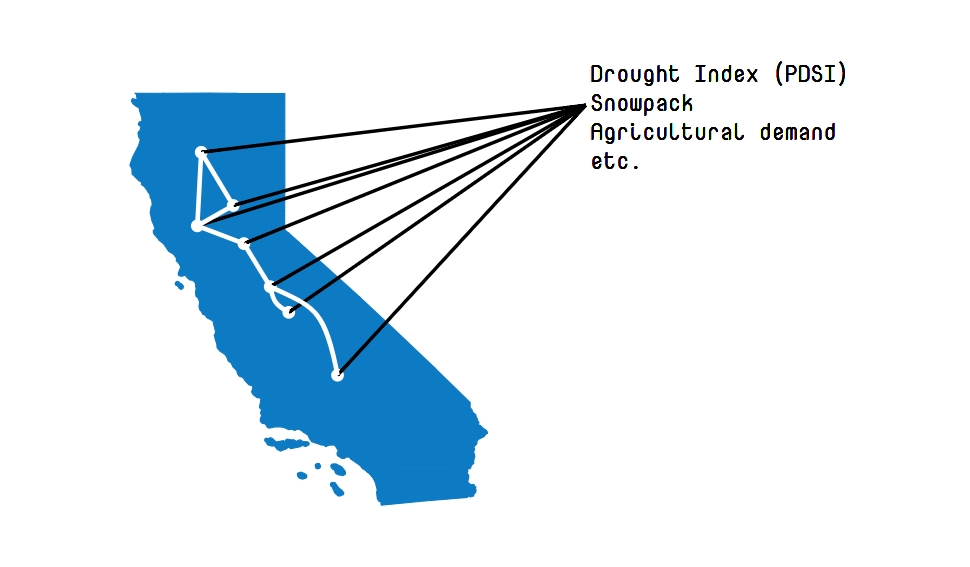

Recent droughts in California have exposed the vulnerability of our water resources, especially the California reservoir system. Historically, ineffective management of many of the large reservoirs during drought conditions have led to multiple cities running out of water. Could we do better in the future? Caltech researchers have developed a statistical model that may help us manage our water better.
From 2012 to 2015, California was in a state of severe drought, on par with the worst 4-year periods in the past 1200 years. The catastrophic impact of drought include:
Palmer Drought Severity Index (PDSI) is a hydrological measure that uses temperature and precipitation data to estimate relative dryness. The scale of PDSI is from -5 to 5, where positive values indicate wet spells and negative values indicate dry spells. In 2015, we were at a PDSI value of -4, leading the state to take the following actions:
Currently, in 2018, we are at a PDSI value of 3.
Reservoirs are a key part of the world’s water infrastructure. Their roles include:
The state of California has constructed 1,530 reservoirs having a collective storage capacity equivalent to a year of mean run-off from California rivers. The purpose of this system is to create water storage capacity and extend seasonal water availability to meet agricultural, residential, industrial, power generation, and recreational needs.
The visualization below demonstrates the historical response of representative California reservoirs to range of drought conditions.
Unlike most of the components of the hydrological components which occur naturally, humans play a significant role in the behavior of reservoirs. Specifically, water managers control inflow and outflow of water daily based on complex water demands such as hydropower generation, flood control, irrigation, consumption, and recreation. Water managers do their best to manage the water level so that the reservoirs don’t dry out, but sometimes this happens anyway-- and there are consequences for communities when it does.
In August 2014, the water level in Northern California's Lake Shastina Reservoir dropped critically low.
This resulted in serious water restrictions in the nearby town of Montague, CA.
The story of Montague demonstrates that communitites face consequences when a reservoir reaches critically low levels. If we could predict the reservoir's water level a couple of months in advance, we could potentially prevent this. But predicting future water levels is more difficult than it sounds...
If you're trying to predict how much water you'll have in your reservoir in a couple of months, factors such as precipitation, snowpack, PDSI, and temperature must be considered. As an example, knowing future PDSI (are we in a drought? A wet spell?) could help us figure out if our reservoir is in danger.
It turns out that reservoirs are "connected"-- that is, there's a high correlation between the water levels of some pairs of reservoirs. Sometimes this is for obvious reasons (like they're physically connected), but not always. So it could also help us to look at how other reservoirs are doing, in addition to looking at PDSI.
Researchers at Caltech have developed a statistical model that incorporates reservoir dependency and the influence of external factors. The model is based on thinking of reservoirs as nodes in a graph and edges between nodes representing dependencies between reservoirs. The external factors are characterized as other nodes sitting in this graph impacting each reservoirs. Using historical data, Caltech researchers are able to precisely characterize dependencies of reservoirs and quantify the influence of external factor on reservoirs.
One of these external factors is PDSI. Let’s see what this model tells us about the influence of PDSI on the reservoirs...
This model measures risk-- in other words, how likely it is that a particular reservoir will drop below x% capacity, given a PDSI of y. If a water manager can tell that a reservoir is at high risk of exhaustion, they can make different decisions and conserve water.
Try changing the PDSI slider and see how the PDSI affects each reservoir's risk of going below x%.
There's currently no standardized system for how a water manager should respond to a certain PDSI. This model could help water managers identify when a reservoir is at risk and take different actions to avoid situations like Montague's.